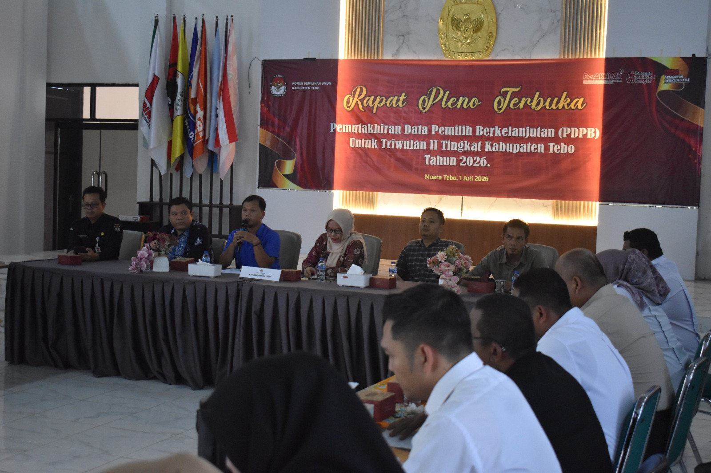

Pemilih Baru Kabupaten Tebo Terbanyak di Provinsi Jambi pada Semester I Tahun 2026

TEBO — Kabupaten Tebo mencatatkan jumlah pemilih baru terbanyak di Provinsi Jambi berdasarkan hasil Rekapitulasi Pemutakhiran Data Pemilih Berkelanjutan atau PDPB Semester I Tahun 2026. Capaian tersebut menunjukkan tingginya dinamika data kependudukan sekaligus pentingnya pelaksanaan pemutakhiran data pemilih secara berkelanjutan.
Berdasarkan hasil rekapitulasi tingkat Provinsi Jambi, jumlah pemilih pada Semester I Tahun 2026 ditetapkan sebanyak 2.826.995 pemilih, yang terdiri atas 1.425.853 pemilih laki-laki dan 1.401.142 pemilih perempuan.
Sementara itu, Kabupaten Tebo menetapkan sebanyak 279.051 pemilih berkelanjutan yang tersebar di seluruh kecamatan, desa, dan kelurahan di wilayah Kabupaten Tebo. Kabupaten Tebo juga tercatat sebagai daerah dengan jumlah pemilih baru terbanyak di antara kabupaten dan kota se-Provinsi Jambi pada Semester I Tahun 2026.
Pemilih baru tersebut antara lain berasal dari penduduk yang telah berusia 17 tahun, sudah atau pernah menikah, serta masyarakat yang sebelumnya belum tercatat dalam daftar pemilih.
Pemutakhiran juga dilakukan terhadap penduduk yang mengalami perubahan elemen data, pindah domisili, meninggal dunia, beralih status menjadi anggota Tentara Nasional Indonesia atau Kepolisian Negara Republik Indonesia, serta pemilih yang tidak lagi memenuhi persyaratan.
Capaian ini merupakan bagian dari upaya KPU Kabupaten Tebo dalam menjaga data pemilih agar tetap akurat, mutakhir, komprehensif, inklusif, dan dapat dipertanggungjawabkan. Pemutakhiran data dilakukan secara berkelanjutan melalui pencermatan data dan koordinasi bersama pemerintah daerah, Dinas Kependudukan dan Pencatatan Sipil, Bawaslu, serta pemangku kepentingan terkait.
Koordinasi tersebut diperlukan untuk memastikan setiap perubahan data kependudukan dapat ditindaklanjuti dalam proses pemutakhiran data pemilih. Dengan demikian, masyarakat yang telah memenuhi persyaratan sebagai pemilih dapat tercatat secara tepat dalam daftar pemilih.
KPU Kabupaten Tebo juga mengajak seluruh masyarakat untuk berperan aktif dengan memeriksa status kepemilihannya. Masyarakat yang belum terdaftar, mengalami perubahan identitas atau alamat, maupun menemukan data pemilih yang tidak sesuai dapat menyampaikan tanggapan dan masukan kepada KPU Kabupaten Tebo.
Partisipasi aktif masyarakat sangat diperlukan untuk mewujudkan daftar pemilih yang berkualitas serta memastikan setiap warga negara yang telah memenuhi persyaratan dapat menggunakan hak pilihnya pada Pemilu dan Pemilihan mendatang.
Melalui pelaksanaan PDPB secara konsisten, KPU Kabupaten Tebo menegaskan komitmennya untuk terus memberikan pelayanan data pemilih yang akurat, transparan, dan berkelanjutan kepada masyarakat.